Multimodal digital trace data research using Screenomics and multi-agent systems
From digital interactions to communication styles and human understanding
![]()
@ NTU Psychology Seminar
2026-03-11
Screenomics 3.0: A Framework for Visual Digital Trace Research
Why Study Real-World Digital Interactions?
Characteristics of Real-World Interactions
- Increasing reliance on digital media.
- Interactions are rapid and bursty across platforms.
- Fragmentation of content categories.
- Time domain issues: exposure over short vs. long intervals.
- Idiosyncrasy across individuals.
- All of these challenge conventional social and behavioral research methods.
Challenges in Capturing Digital Trace Data
Screens as Digital Trace Data (DTD)
DTD: “records of activity (trace data) undertaken through an online information system (thus, digital).” (Howison et al., 2011).
Screens vs. platform APIs & data donation:
- platform-specific vs. user-specific (Ohme et al., 2024).
- capture a broader spectrum of interactions
- multimodality: images, text, interface elements, mixed content
- flexible unit of analysis (screen, session, episode)
- ease of passive data collection
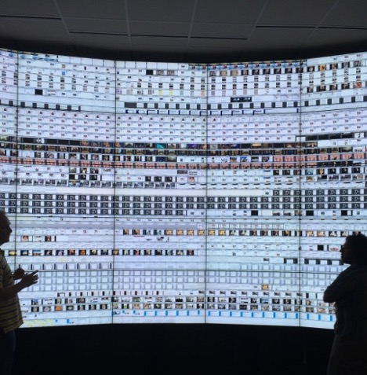
The Stanford Human Screenome Project
Screenome: Capturing Real-World Interactions
Captures smartphone screens every 5 seconds (or less).
~500 million screens from over 1,000 people for up to 1 year.
Privacy, risk, and data security considerations.
Linkage to periodic surveys and health measures.
A foundational move from screen time to screen content.
Reeves et al. (2020). Nature; Reeves et al. (2021). Human–Computer Interaction.
Expanding on the Screenome Approach
Transition to Screenomics 3.0
- Screenome 1.0 – research infrastructure & conventional ML-based measurements.
- Screenome 2.0 – deep learning-based content analysis.
- Screenomics 3.0 – multimodal encoders and large multimodal models (LMMs).
What changes in 3.0?
- screens become vectors in multimodal space
- clustering, retrieval, and labeling become scalable
- inductive exploration and hypothesis generation become much easier
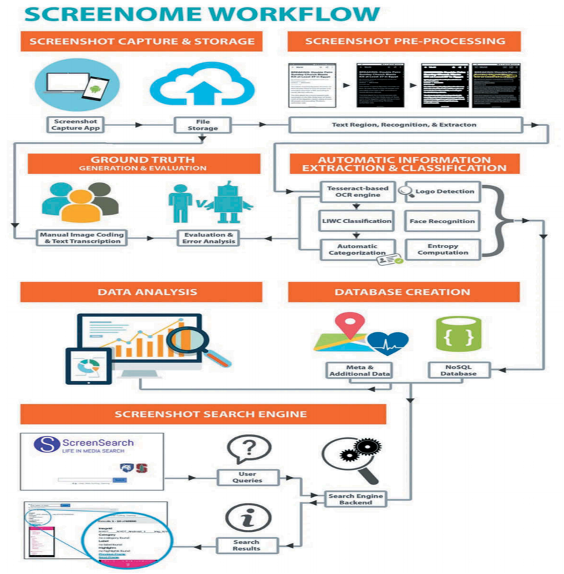
Cho et al. (in prep.).ML-Based Content Analysis & Mixed Methods
Media Sequencing and Family Dynamics
- Homeostatic mechanism of media sequencing in everyday life.
- Young adults’ smartphone interactions with family.
- ML-based content analysis combined with qualitative interviews and diary methods.
- Focus on how digital interactions sequenced with offline interactions shape family dynamics.
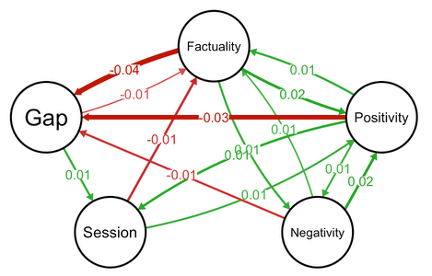
Cho et al. (2023). Heliyon.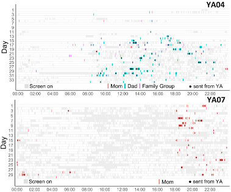
Sun et al. (2023). Journal of Social and Personal Relationships.ML-Based Content Analysis & Mixed Methods
Mental Health via Screenome
- Linking survey measures with digital trace data (DTD).
- Depression, state anxiety, ADHD, and happiness tracked longitudinally.
- Person-specific models from 6.7M screenshots and repeated surveys.
- Strong within-person couplings can emerge, but the configuration differs across individuals.
- Suggests a move toward idiographic media psychology and precision mental health.
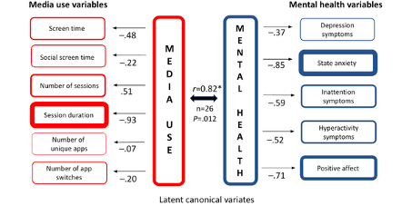
Cerit et al. (2025). JMIR Formative Research.Deep Learning-Based Content Analysis
Visual Emotions, Scene Recognition, Food Detection
- CNN-based scene recognition to categorize environments.
- CNN-based food detection for identifying food-related content.
- Visual emotion recognition (valence and arousal) from screen images.
- Weekly trends: link visual emotion trajectories to well-being.
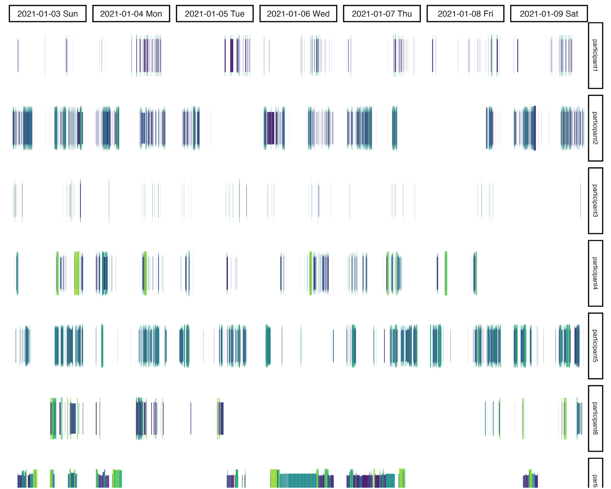
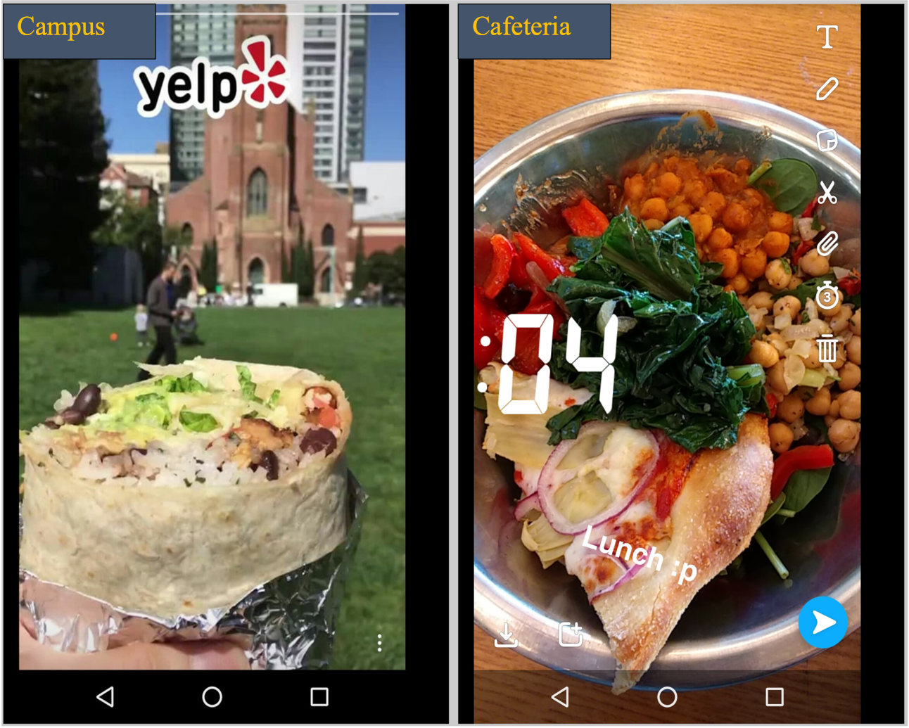
Multimodal Encoders and LMMs
Adolescents’ Food-Related Content Exposure
- 20 adolescents, 1-week observation of smartphone screens.
- 3% of all exposure is food-related; 0.6% branded.
- Demonstrates how a specific content category can be mined from large screen sets.
- Shows feasibility of longitudinal content tracking at the screen level.
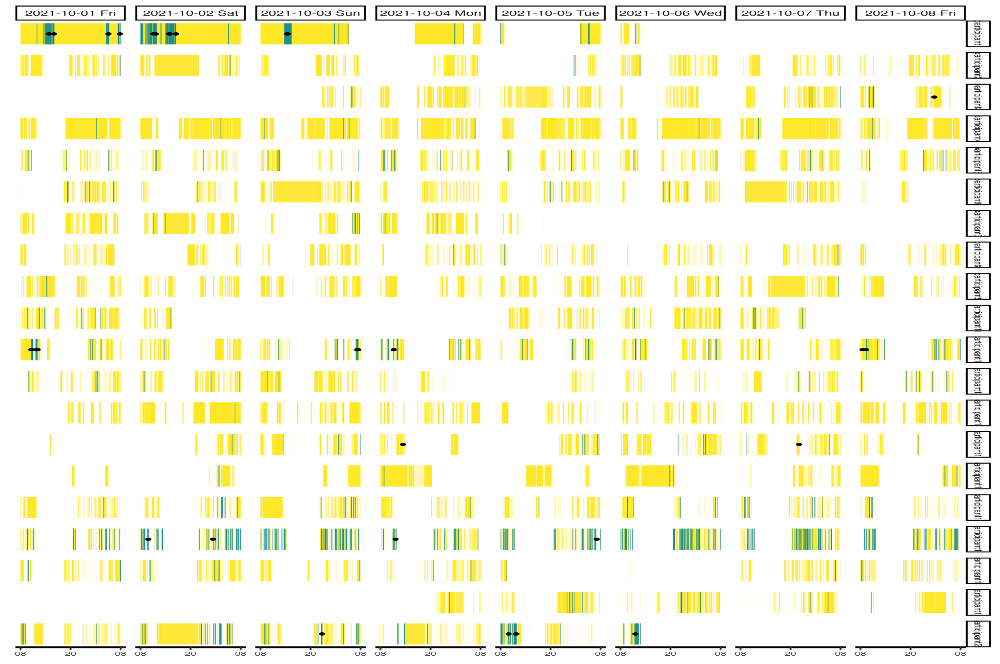
Cho et al. (in prep.).Multimodal Encoders and LMMs
Spatial + Behavioral Clusters with CLIP & OCR
- Screenotype: unique screenomes associated with behaviors and experiences.
- HDBSCAN + UMAP on 320K data points for cluster analysis.
- 26 distinct clusters; ~19% non-noise.
- Within-app CLIP variance > between-app variance → rich within-app heterogeneity.
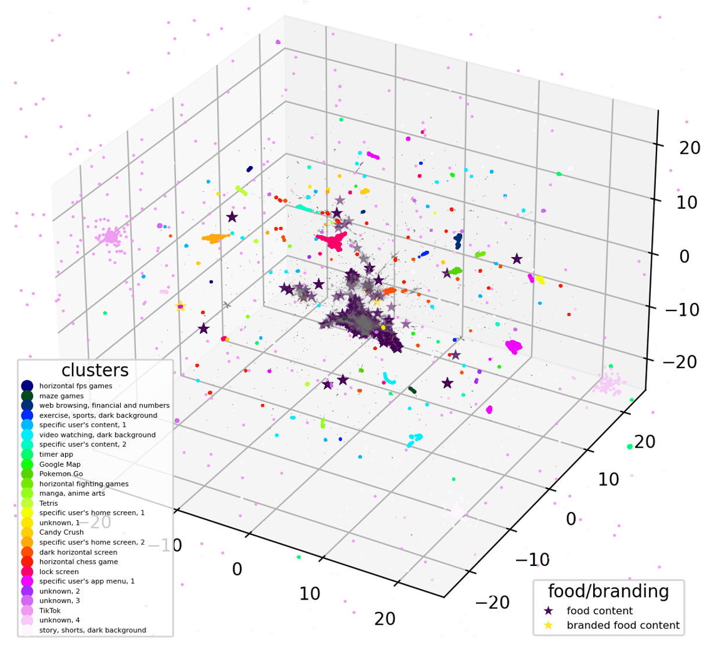
Cho et al. (in prep.).Multimodal Encoders and LMMs
Mapping Digital Screen Content
- Media Content Atlas for open-ended exploration of digital media interactions.
- Content mapping with HDBSCAN + UMAP on 1.12M data points from 112 participants.
- Moves beyond app names and app categories toward content-based clustering.
- Supports hypothesis generation about media repertoires and use patterns.
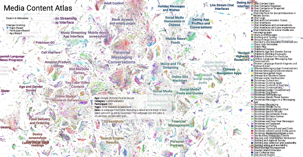
Cerit et al. (2025). CHI EA.Multimodal Encoders and LMMs
Mapping Digital Screen Content
Image + text embeddings combined.
Large multimodal model (LMM) descriptions.
Topic label generation for clusters of screens.
Information retrieval: querying screens and descriptions for
- content categories
- usage contexts
- theoretically relevant concepts
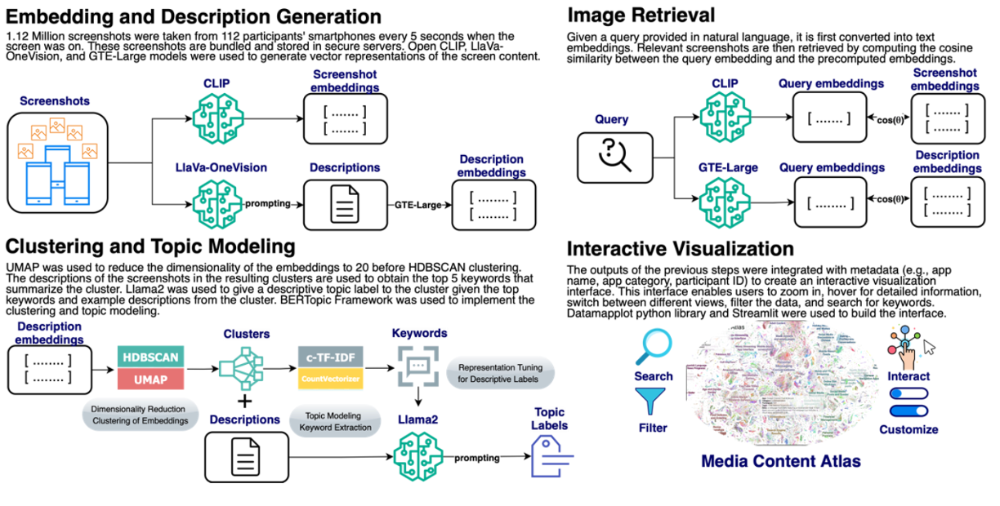
Cerit et al. (2025). CHI EA.Screenomics 3.0 Architecture
Overall Pipeline
- Screenomes: longitudinal smartphone screenshots.
- Image encoder (CLIP, EVA-CLIP, e5-V) → image embeddings.
- OCR engine → text from screens.
- Text encoder → document embeddings.
- Task-specific labels with LMM + PEFT.
- Human labels + synthetic labels together support scalable annotation.
This is the technical backbone of Screenomics 3.0.
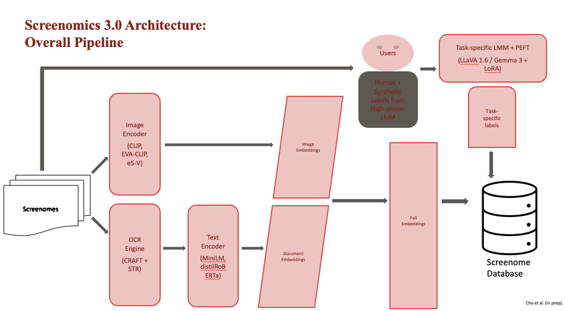
Cho et al. (in prep.).Screenomics 3.0 Architecture
Text-to-Image Retrieval with CLIP
- Compute cosine similarity between text queries and image embeddings.
- Efficiently find relevant and irrelevant images.
- Supports rapid creation of balanced labeled datasets.
- Enables exploratory analyses of usage contexts and media patterns.
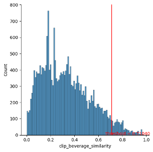
Screenomics 3.0 Architecture
Human Labels with Label Studio
Label Studio for customized labeling interfaces across projects.
Supports multiple annotation tasks (food presence, valence, task type, etc.).
Reliability remains a key challenge:
- consistent instructions
- quality control
- adjudication
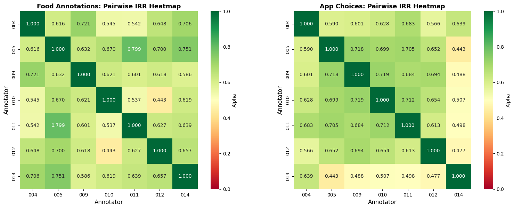
Screenomics 3.0 Architecture
Task-Specific Labels with Large Multimodal Models
LLaVA and related open-source LMMs enable:
- VQA over smartphone screens
- PEFT for task-specific labeling
- large-N inference over millions of screens
Competitive families now include:
- Gemma 3
- Qwen2.5-VL
- Llama 3.2-V
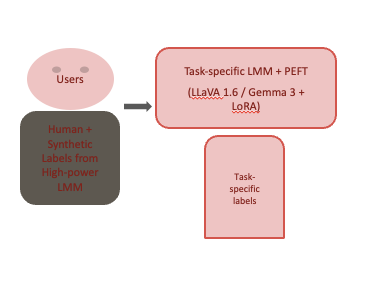
. Liu et al. (2023).Screenomics 3.0 Architecture
PEFT with LoRA
- LoRA makes large-model fine-tuning feasible on modest hardware.
- Freeze the base model, train only small low-rank adapters.
- Reduces trainable parameters and memory footprint substantially.
- In practice, this is what makes domain-specific screen labeling much more manageable.
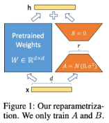
Hu et al. (2021).
Multimodal Encoders and LMMs
High-Level Behavioral Constructs
- LMM-based measurement of user activity and intention.
- Combine commercial solutions with prompt engineering.
- Measure higher-level behavioral constructs (e.g., consuming media, functional activities).
- One application: Krippendorff’s Alpha = 0.877, precision = 0.92, recall = 0.91.
- Opens the door to measuring meaningful psychological constructs, not just raw content.
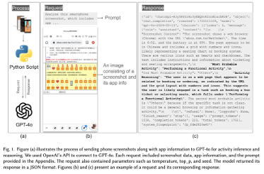
Chang et al. (under review).Pitfalls and Future Directions
Challenges, Limitations, & Future Possibilities
Over-reliance on models can lead to subtle biases or overconfidence in results.
Need for interpretability tools to better understand model decisions.
Infrastructure is improving: open-source Screenomics now supports more flexible, customizable multimodal data collection.
Importance of interdisciplinary collaboration for domain-specific content analysis. Kim et al. (2026). Nature Health
Future expansions:
- efficient model training and inference
- real-time analytics
- richer multimodal streams
- user feedback and participatory design
Key Takeaway
Screenomics shifts the study of media behavior from how long people use media to what people actually experience in digital environments.
Transition
If digital life can now be measured at this level of resolution, then the next question is not only what people see, but also what kinds of styles and meanings emerge across media content.
Some related ideas…
The Puzzle
Digital media research often measures:
- Time spent
- Platform usage
- Interaction counts
But these measures miss something fundamental.
Digital environments are fundamentally symbolic environments. People interact with:
- Images & language
- Multimodal cues, e.g., audiovisual
- Cultural symbols
What spreads in these environments is not only information, but also styles, meanings, and signals.
The Transition
Something similar may now be happening in the study of human communication and behavior.
- For the first time we can observe large-scale digital interaction environments with high resolution:
- Screenomics
- Digital trace data
- Multimodal communication archives
- Combined with:
- Multimodal embeddings
- Large language and vision models
- These data allow us to study systems of meaning in digital media.
The Analogy
- Another scientific field recently underwent a similar transformation: biology. For much of its history, biology was:
- Descriptive & observational
- Limited by measurement tools
- Once biological systems became digitally measurable, the field changed. Researchers could integrate:
- Genomic data
- Imaging data
- Physiological measurements
- Biology became increasingly computational and model-driven.
Next Project: Communication Styles in Social Media
This motivates the next project. Instead of analyzing individual posts or messages, we ask: Can we identify systematic communication styles in multimodal political media?
To answer this question, we developed a pipeline that:
- Processes raw social media videos
- Extracts visual, vocal, and textual features
- Identifies recurring multimodal communication styles
The next section introduces this framework.
From Digital Trace Data to Communication Styles
A Framework for Analyzing and Linking Multimodal Social Media Content
- MJ Cho, Chingching Chang, Yuan Hsiao, Hen‑Hsen Huang
- RCHSS, Academia Sinica
The Challenge: A New Era for Media Effects Research
The field is shifting from quantity of media use to content and its effects (Pouwels et al., 2024).
Nature Research Intelligence: Multimodal communication as a frontier.
Multimodal communication is emerging as a major research frontier.
Traditional methods are insufficient for highly fragmented media environments (Ohme et al., 2024).
The video problem:
- Video is now a dominant form of social media content.
- Video is inherently multimodal (Kroon et al., 2024).
- The audio channel remains understudied in communication research.
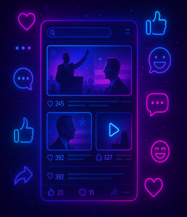
Multimodality and Media Psychology
Multimodality and Media Psychology
Why Multimodal Thinking Matters
- Online media and platform–operator (PO) data are inherently multimodal.
- Format / schema shape psychological effects.
- Media theory is also multimodal:
- visual framing,
- vocal tone,
- textual content.
- visual framing,
- Psychological effects of expression and tone.
- Social meaning of objects and scenes.
- Our goal:
- Measurement of styles,
- Their effects,
- A coherent analytical framework.
- Measurement of styles,
A Roadmap from the Literature & Our Contribution
Three-Step Approach (Pouwels et al., 2024)
- Collect digital trace data (DTD, e.g., via APIs, tracking).
- Perform automated content analysis (text and visuals).
- Conduct linkage analysis to study effects on outcomes.
Our Contribution
- An end-to-end framework that operationalizes this approach for video.
- Integrates visual, audio, and textual signals
Our Framework: From Raw Videos to Communication Styles
Goal: A replicable pipeline to transform raw videos into theoretically meaningful communication styles.
Data:
- 398 Instagram videos from 12 U.S. Senate candidates during the 2024 election.
Three core stages:
- Preprocessing – Raw video files → analysis-ready data streams.
- Multimodal Feature Extraction – Cleaned data streams → comprehensive behavioral features.
- Style Identification & Linking – Feature sets → interpretable styles for linkage analysis.
- Preprocessing – Raw video files → analysis-ready data streams.
Stage 1: From Raw Video to Analysis-Ready Streams
Goal: Preprocess and transform noisy social media video into isolated communication sources.
Visual filtering:
- Isolate candidate presence using face detection (MediaPipe) and recognition (DeepFace).
Audio filtering:
- Isolate candidate’s voice using denoising (Demucs) and speaker diarization (PyAnnote).
Speech transcription:
- Transcribe only the filtered candidate audio with ASR (Whisper).
Result: A validated set of synchronized video, audio, and text data — only the target communicator.
Stage 2: Quantifying Sight, Sound, and Speech
- Visual features (nonverbal performance):
- Facial Action Units (AUs) → emotional expression.
- Head pose → engagement cues.
- Valence & arousal (EmoNet) → affective state.
- Facial Action Units (AUs) → emotional expression.
- Audio features (vocal performance):
- Prosodic cues → pitch (F0), intensity (MFCC0), speech rate.
- Vocal emotion → valence & arousal (wav2vec2).
- Prosodic cues → pitch (F0), intensity (MFCC0), speech rate.
- Textual features (verbal content):
- Topic modeling (BERTopic) → substantive themes.
Stage 3: Identifying Communication Styles
Goal: Identify a meaningful typology of styles from thousands of features.
Unsupervised clustering (K-Means / HDBSCAN):
- Discover data-driven patterns across multimodal feature space.
LLM-assisted labeling:
- Bridge quantitative patterns with qualitative meaning.
- Derive interpretable style labels.
- Bridge quantitative patterns with qualitative meaning.
Example styles identified (audiovisual):
- “Cheerful Energetic”
- “Stony Warm”
- “Concerned Articulate”
- “Cheerful Energetic”
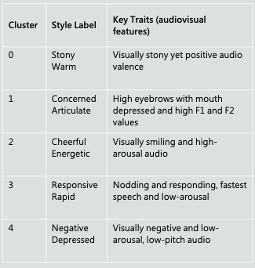
Stage 3: Tri-Modality Communication Styles
Styles from Visual, Audio, and Text Combined
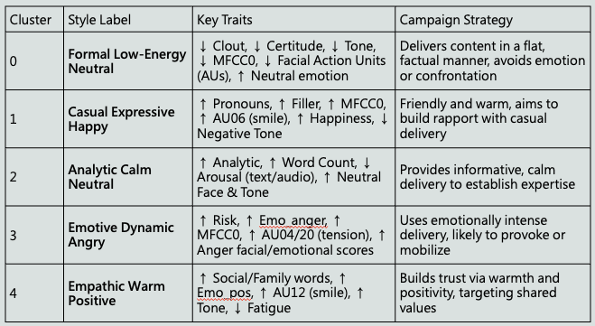
Validating the Styles
Distribution Across Parties
Goal: Demonstrate the validity of computationally derived styles.
Results: Styles systematically vary by political party.
Visual styles:
- Democrats: more likely to use “Cheerful” and “Excited” styles.
- Republicans: favor “Serious,” “Frowning,” and “Still” visual approaches.
- Democrats: more likely to use “Cheerful” and “Excited” styles.
Audio styles:
- Democrats: more often use a “Rapid” vocal style.
- Republicans: more often use a “Somber” tone.
- Democrats: more often use a “Rapid” vocal style.
Audiovisual styles:
- Democrats: “Cheerful Energetic”.
- Republicans: “Concerned Articulate” and “Negative Depressed”.
- Democrats: “Cheerful Energetic”.
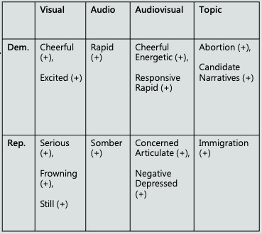
Style Effectiveness and Party Differences
How Style Effectiveness Varies by Party
The effectiveness of a communication style often depends on party.
Examples:
- “Neutral Calm” audiovisual style generates high engagement for Republicans but very little for Democrats.
- Democrats benefit more from a “Cheerful Energetic” approach, which is less effective for Republicans.
- “Neutral Calm” audiovisual style generates high engagement for Republicans but very little for Democrats.
Implication: Style is not universally good or bad; its impact is conditional on identity and context.
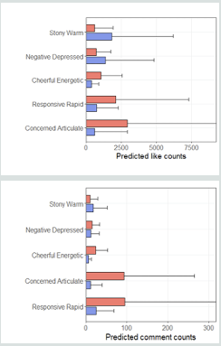
What This Framework Enables
- This approach makes it possible to:
- Quantify how messages are delivered
- Study multimodal communication styles
- Link communication styles to audience outcomes
- This moves media effects research from:
- What is said → How communication is performed.
Why All These Matters?
- Public controversies today unfold in a radically different information environment.
- Citizens encounter massive volumes of fragmented information.
- Algorithms curate different realities for different users.
- Competing narratives circulate simultaneously across platforms.
- As a result, many disagreements are not simply disagreements in values, but what people believe the world actually looks like.
- Key question:
- Can human–AI interaction systems help people navigate complex information environments and understand controversial issues more clearly?
A Tale of Scientific Evolution
- When Biology Becomes Computable, Mind Becomes Modelable
- Cognition emerges from biological information processing.
- Multi‑scale biological models create mechanistic foundations for psychological theory.
- Integrated biological + digital‑trace data enables predictive models of behavior.
- Synthetic agents and personas become useful testbeds for psychological mechanisms.
- Psychology shifts from primarily correlational explanations toward mechanistic and intervention‑driven science.
Human–AI Interaction for Understanding Online Public Opinion
Asis-RAG: A Human–AI Interaction System for Exploring Online Public Opinion
This project examines whether human–AI interaction systems can help citizens better understand controversial policy debates by combining:
- AI‑generated summaries
- Structured viewpoint exploration
- Interactive question‑answering agents
Research Team and Background
- Project goal:
- Improve citizens’ understanding of complex public controversies
- Support more reflective and evidence‑based discussion
- Research foundation:
- Large‑scale Taiwanese online public‑opinion databases
- Retrieval‑augmented generation (RAG) system integrating real public discourse
- Research team: MJ Cho, An-Ting Hsieh, Yu-Wei Huang, Chingching Chang, Yuan Hsiao, Hen‑Hsen Huang, Yung‑Ju Chang
Roots of Social Controversy: Gaps in Understanding
- Public controversies often persist not only because of disagreement, but because citizens encounter fragmented and selectively presented information.
- Selective exposure and motivated reasoning
- Algorithmic filtering and echo chambers
- Fragmentation of public discourse across platforms
- Declining shared epistemic authority
- These dynamics make it difficult for citizens to form a coherent understanding of complex issues.
System Design: Human–AI Interaction Components
The system integrates three major components.
- AI‑generated video summary
- LLM summarizes long debate videos into structured key points.
- Viewpoint spectrum interface
- Visualizes opposing standpoints across multiple policy dimensions.
- Users can click on different positions and read real arguments from politicians, experts, and public figures retrieved through RAG.
- Interactive Q&A agent
- Suggests relevant questions related to the video content.
- Users can ask follow‑up questions and retrieve supporting evidence from a public opinion database.
Experimental Design
- We conducted a controlled experiment with 64 participants across four interface conditions.
- Video summary only
- Video summary + viewpoint spectrum
- Video summary + Q&A agent
- Video summary + viewpoint spectrum + Q&A agent
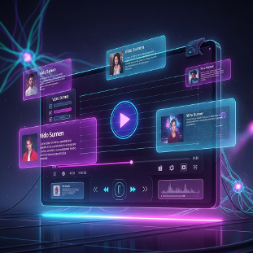
Experimental Design Cont.
- Participants watched a debate video on the Fourth Nuclear Power Plant referendum in Taiwan, interacted with the system, and then completed post‑interaction surveys and knowledge tests. Measures included:
- Issue knowledge
- Attitude positions across multiple policy dimensions
- Critical thinking self‑assessment
- System usability and workload
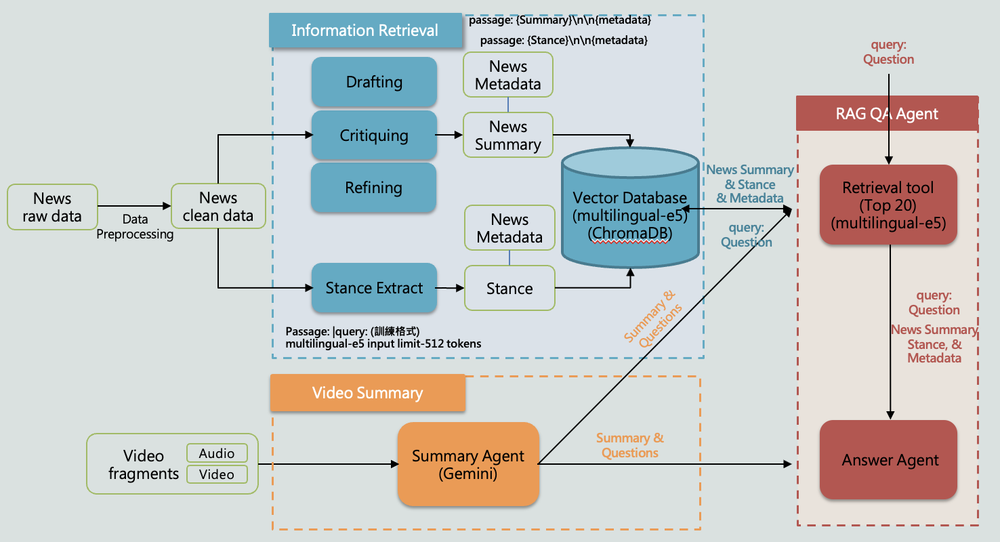
Real-time Human–AI Interaction for Public Opinion Research
User Interaction Behavior
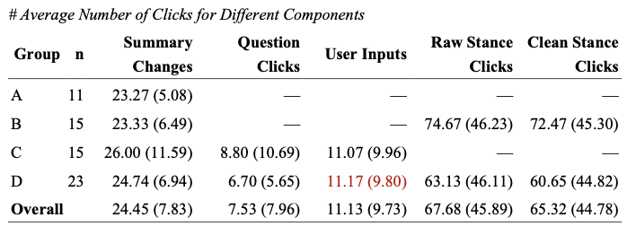
- System logs show that participants actively explored the interface components. Examples of interaction patterns:
- Users frequently revisited the AI summary while interacting with other components.
- Participants in Q&A conditions asked an average of about 11 questions during the session.
- Participants in viewpoint spectrum conditions clicked stance nodes 60–70 times on average, indicating active exploration of perspectives.
- These results suggest that users did not passively consume AI output, but actively navigated between summaries, perspectives, and questions.
Effects on Issue Understanding
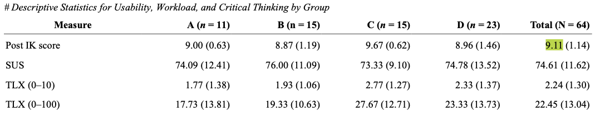
- Participants performed strongly on post‑test knowledge questions about the debate. Average knowledge score
- 9.11 out of 10 across all conditions.
- This indicates that the AI‑assisted system successfully conveyed key factual information from the debate.
Attitude Change and Polarization
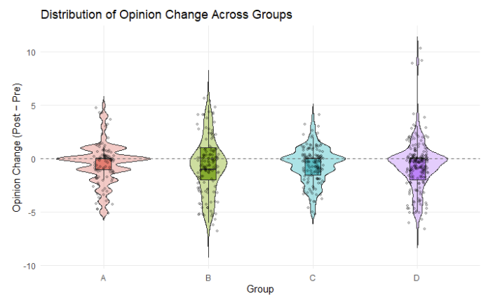
- Across conditions, participants’ attitudes remained largely stable overall.
- Most opinion changes were small and centered around zero.
- Some sub‑issues showed moderate shifts.
- Participants with stronger initial attitudes tended to move slightly toward the midpoint of the scale.
- This suggests a possible mild depolarization effect rather than strong persuasion.
Regression Evidence
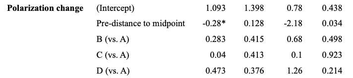
- Regression models further clarify the mechanisms behind attitude change.
- Pre‑existing attitudes strongly predict post attitudes.
- The viewpoint spectrum condition (Group B) shows greater absolute attitude change than the summary‑only baseline.
- Participants with stronger initial attitudes tend to move slightly toward the midpoint, suggesting mild depolarization.
What These Results Suggest
The system does not strongly persuade users. Instead, it appears to support reflective exploration of complex issues.
Observed patterns:
- Users actively explored different viewpoints and questions.
- Knowledge acquisition was high.
- Attitudes remained mostly stable, with occasional moderation effects.
This suggests that human–AI systems may function as cognitive scaffolding for public reasoning, rather than persuasion tools.
A New Phase for Social Science
Behavior becomes measurable across multiple layers:
Cognitive processes
Digital trace environments
Human–AI interaction systems
This integration allows researchers to study how people understand complex issues in real interaction environments, not only through surveys.
The result may be a new phase of social science:
- A designable science of human understanding.
Thank You
Questions?
Human–AI interaction may allow us to move beyond simply measuring public opinion. Instead, we can begin to design systems that help people understand complex issues.
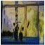
Mu-Jung ’MJ’ Cho | 卓牧融
mjcho@as.edu.tw